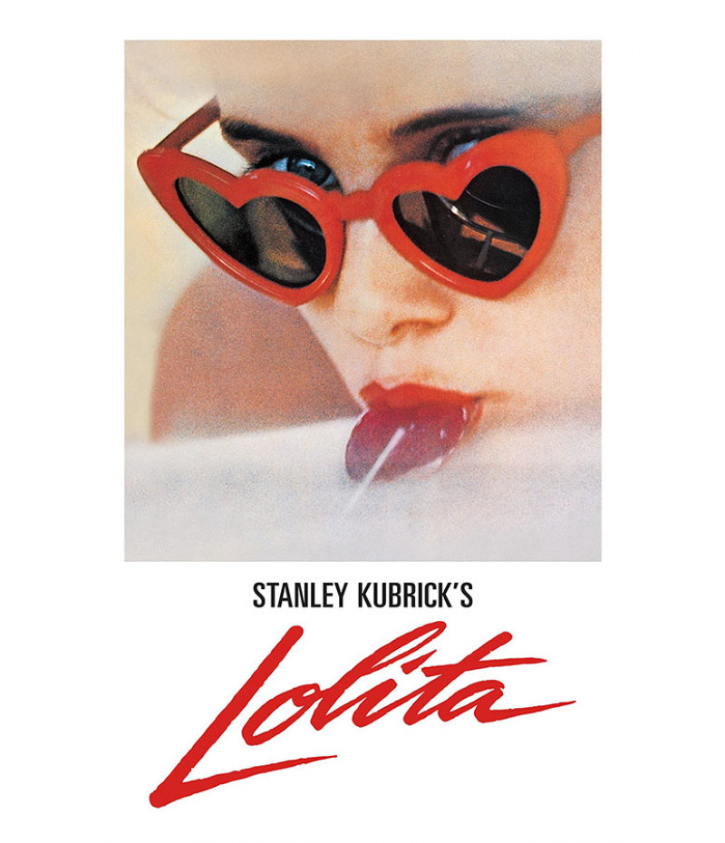

Filme Laranja Mecânica (A Clockwork Orange)
Lançado em 1971, não é raro ouvir Laranja Mecânica ser citado até hoje em rodas de conversa, aulas, críticas cinematográficas e filmes. A obra é uma presença constante na cultura pop, estampando camisetas, buttons, mochilas, tatuagens e muito mais. Mas afinal, por que o filme ainda chama atenção, mais de 40 anos após seu lançamento?

Uma breve síntese sobre o filme
“Laranja Mecânica” conta a história de Alex, um jovem líder de uma gangue que comete crimes violentos numa Inglaterra distópica. Após ser traído por seus colegas, é preso e submetido a uma técnica de reabilitação forçada, que levanta dilemas sobre o livre arbítrio, a moral e o controle social. A obra mistura estética impactante, trilha sonora clássica e críticas sociais profundas.
O que é possível analisar dentro da obra?
O filme aborda temas como delinquência juvenil, repressão estatal, livre arbítrio, violência, condicionamento psicológico e corrupção das autoridades. É perturbador, polêmico e se tornou um clássico cult, sendo um dos filmes mais emblemáticos de Stanley Kubrick.
Outras obras aclamadas de Kubrick:

